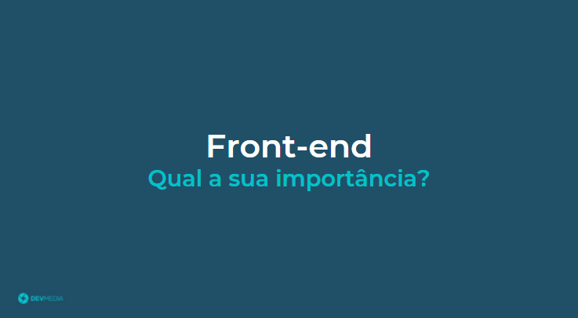
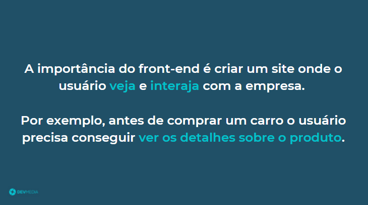

O front-end possui uma grande importância para uma empresa, veja no flow qual é a sua missão:
O front-end faz a conexão visual entre o usuário e a empresa através de um site.
Já entendi que o programador vai criar o site da empresa, mas no que consiste a programação front-end?
O flow abaixo responde essa pergunta:


Figura 5
Página do globo.com onde temos o botão menu (ao lado da logo no canto superior esquerdo), o texto Globoplay ao centro, o ícone do usuário no canto superior direito e a imagem grande ao centro.
Um programador front-end:
É através do front-end que o usuário consegue ter uma visão da empresa. No front-end o usuário consegue conhecer e interagir com a empresa, visualizar informações e comprar um produto